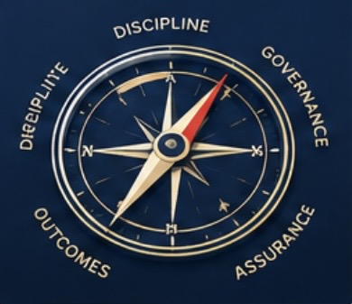
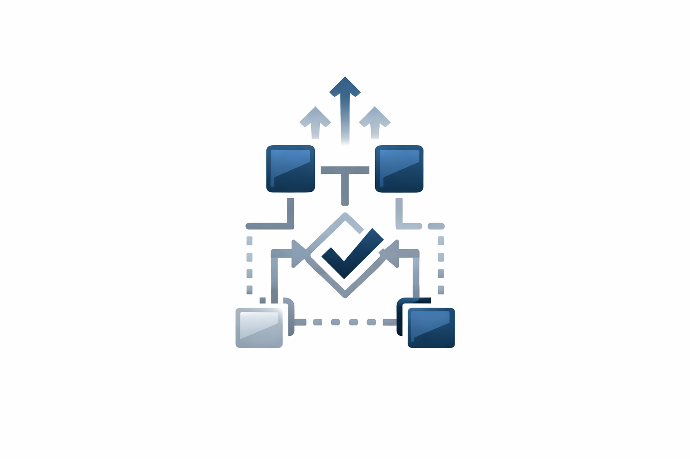

TWC Ltd — Brand Story
TWC Ltd (Tim Williams Consulting Ltd) is the independent consulting brand for senior-level programme leadership across cyber security, cloud transformation, digital workplace and enterprise infrastructure.
Who We Are
TWC Ltd is the registered business name for Tim Williams Consulting Ltd, a specialist consultancy providing programme leadership, PMO governance and delivery assurance for complex technology transformation programmes. The brand is built on a reputation for clarity, delivery discipline and measurable outcomes.
What We Do
- Cyber security uplift and CAF maturity improvement
- Cloud transformation (Azure, AWS, Entra, Intune)
- Enterprise infrastructure modernisation
- Digital workplace transformation (Windows 10/11, Teams Rooms, global device estates)
- Programme governance, PMO leadership and delivery assurance
- Service transition and operational readiness
Why the Brand Exists
The TWC Ltd brand was created to provide a clear, professional identity for consulting engagements delivered by Tim Williams. While the consultancy is led by a single senior programme manager, the TWC Ltd brand reflects a structured, outcome-driven approach aligned to enterprise delivery standards.
Registered Business Information
Registered Name: Tim Williams Consulting Ltd
Trading Name: TWC Ltd
Registered Address: 59 Beaumont Rd, Halesowen, B62 9HD
Phone: 07801 453322
Website: https://www.twc-ltd.uk
Brand Values

- Delivery discipline
- Transparency and governance
- Technical credibility
- Measurable outcomes
- Enterprise-grade assurance
Leadership

TWC Ltd is led by Tim Williams, an SC‑Cleared Senior IT Programme Manager with over 25 years’ experience delivering cyber security, cloud and enterprise transformation programmes across global organisations.
Why Organisations Choose TWC Ltd
- Proven delivery across NHS, Defence and global enterprises
- Strong governance and PMO leadership
- Deep technical understanding across cyber and cloud
- Ability to stabilise failing programmes
- Clear communication and stakeholder alignment
Contact
For programme leadership, cyber transformation or enterprise delivery support, TWC Ltd provides structured, outcome-driven consulting aligned to enterprise standards.
Email:timwilliams07@outlook.com / info@twc-ltd.uk
Phone: 07801 453322